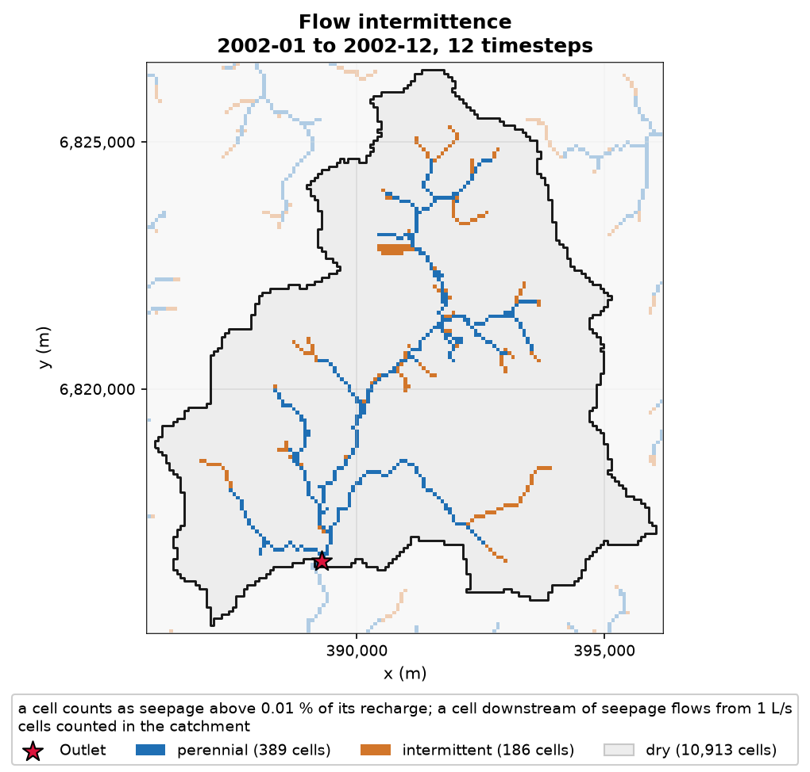
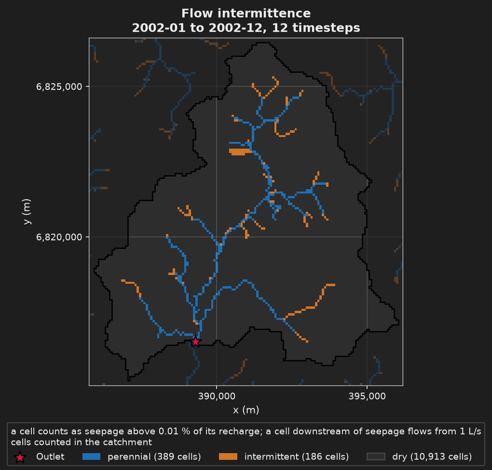

Step 4: the transient run#
- Task
Run the model month by month over 2000-2002 and see which cells flow, and for how long.
- Time
1 to 2 min for the run, 1.5 to 3 min for the command.
- Needs
The example files (The staircase), which hold the observed recharge and runoff. Nothing is downloaded.
- Gives
Five figures and seven files, among them a NetCDF of the water table and a CSV of the discharge.
Step 4 turns step 2 into a monthly transient run over 2000-2002. The recharge and the runoff are no longer one mean: 36 monthly values replace the steady rate. The first period is solved steady and gives the initial heads. K, Sy and Ss are assumed here, not calibrated. The question changes from where the water table reaches the surface to which cells flow, and for how long. The baseflow warning of steps 1 and 2 is gone: the runoff is loaded and added to the discharge.




The file#
step4_transient.toml inherits step2_local_data.toml · + new · ~ changed · keys link to their card1# Step 4: step 2 in monthly transient over 2000-2002, forced by the local 2# monthly recharge and runoff. K, Sy and Ss are assumed, not calibrated. 3# It builds on the local data of step 2; step 3 is the same model on API data. 4# 5# hmp run step4_transient.toml 6 7+base_config = "step2_local_data.toml" 8 9[simulation] 10~name = "nancon_step4_transient" 11 12# One month is the default step. The first period is solved steady and gives 13# the initial heads. 14+[simulation.time] 15+start_datetime = "2000-01-01" 16+end_datetime = "2002-12-31" 17 18[flow] 19# Restated: an inherited "steady" is not undone by the default. 20~flow_regime = "transient" 21~param_list = ["K", "Sy", "Ss"] 22 23# Only matters where the aquifer is confined; MODFLOW 6 asks for a value. 24+[flow.param.Ss.field] 25+kind = "homogeneous" 26+unit = "m-1" 27+value = 1e-5 28 29# A list replaces the parent's, so the four families are written out. 30[data] 31~types = ["hydrography", "hydrometry", "recharge", "runoff"] 32 33# 36 monthly rates replace the steady mean of step 1. 34+[[data.recharge.sources]] 35+source = "custom" 36+path = "recharge" 37+station_ids = ["NANCON"] 38 39# The share of the gauged discharge the groundwater model does not produce. 40+[[data.runoff.sources]] 41+source = "custom" 42+path = "runoff" 43+station_ids = ["NANCON"] 44 45# What enters and leaves, the gauge against the simulation, the seepage of 46# October 2002, the driest month, then which cells flow and for how long: 47# the share of the three years each cell flows, and its class in 2002. 48[display] 49+time = "2002-10-15" 50~figures = [ 51 "flux_timeseries", 52 "hydrograph_sim_obs", 53 "seepage_map", 54 "flow_persistence_map", 55 "flow_intermittence_map", 56] 57 58# One hydrological year, the driest of the record. 59+[display.overrides.flow_intermittence_map] 60+cycle = "2002" 61 62# The exports of steps 1 and 2, now of a transient run: the GeoTIFFs hold 63# December 2002, the last month. Two blocks more for what a record adds. 64 65# The water table over the 36 months: one NetCDF chronicle. 66+[[export__append]] 67+variables = ["head", "watertable_depth"] 68 69# Simulated and gauged discharge over the run: CSV, the model monthly and 70# the gauge daily. 71+[[export__append]] 72+variables = ["discharge", "discharge_obs"]
The resolved file of step 4 against the resolved file of step 2 (step 4 inherits step 2, not step 3).
--- step2_local_data
+++ step4_transient
@@ -7,3 +7,3 @@
[simulation]
-name = "nancon_step2_local"
+name = "nancon_step4_transient"
@@ -15,2 +15,6 @@
]
+
+[simulation.time]
+start_datetime = "2000-01-01"
+end_datetime = "2002-12-31"
@@ -32,3 +36,3 @@
[flow]
-flow_regime = "steady"
+flow_regime = "transient"
param_list = [
@@ -36,2 +40,3 @@
"Sy",
+ "Ss",
]
@@ -54,2 +59,7 @@
+[flow.param.Ss.field]
+kind = "homogeneous"
+unit = "m-1"
+value = 1e-05
+
[flow.sinks_sources.recharge]
@@ -60,7 +70,9 @@
figures = [
- "watershed_id_card",
- "hydrographic_network_reference",
- "seepage_network_confusion_map",
- "downslope_distance_map",
+ "flux_timeseries",
+ "hydrograph_sim_obs",
+ "seepage_map",
+ "flow_persistence_map",
+ "flow_intermittence_map",
]
+time = "2002-10-15"
@@ -68,2 +80,5 @@
orientation = "sn"
+
+[display.overrides.flow_intermittence_map]
+cycle = "2002"
@@ -85,2 +100,14 @@
+[[export]]
+variables = [
+ "head",
+ "watertable_depth",
+]
+
+[[export]]
+variables = [
+ "discharge",
+ "discharge_obs",
+]
+
[data]
@@ -89,2 +116,4 @@
"hydrometry",
+ "recharge",
+ "runoff",
]
@@ -102 +131,15 @@
]
+
+[[data.recharge.sources]]
+source = "custom"
+path = "recharge"
+station_ids = [
+ "NANCON",
+]
+
+[[data.runoff.sources]]
+source = "custom"
+path = "runoff"
+station_ids = [
+ "NANCON",
+]
Run it#
hmp run step4_transient.toml
import hydromodpy as hmp
run = hmp.run("step4_transient.toml")
This is also what py1_run_and_plot.py of the example does, before it draws its own
figure. After the staircase lists the scripts.
Two points of the file are worth a second look. flow.flow_regime is written again,
because an inherited "steady" is not undone by the default. data.types is written
in full, because a list replaces the parent’s.
What you get#
Five figures. The instant of the one-instant figures comes from display.time, here
15 October 2002, the driest month according to the file.
Figure |
What it shows |
|---|---|
|
The components of the water balance through time, inflows positive and outflows negative |
|
The simulated discharge against the gauged one |
|
The seepage cells of October 2002 |
|
The share of the three years each cell flows: dark where the channel ran all year, pale where it ran only at the wettest steps |
|
One calendar year, 2002 ( |
Six export blocks write seven files in share/nancon_step4_transient/: the five files of
the inherited blocks, now of a transient run (the GeoTIFFs hold December 2002, the last
month), and two more.
Block |
File |
|---|---|
|
the water table over the 36 months, one NetCDF file |
|
simulated and gauged discharge, a CSV: the model monthly, the gauge daily |
Key fields#
The time step is not written: simulation.time.step_value defaults to one month.
Next: Step 5: every export, which writes the results in every format.